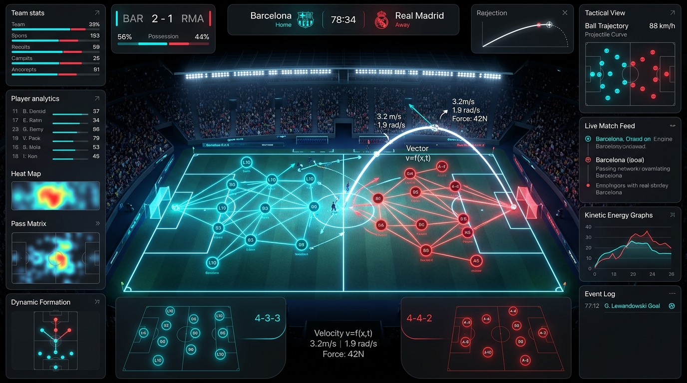

01 · Published Research — IRJIET
Football Analytics | Machine Learning | Predictive Analytics | Research
Indian Super League Match Prediction & Research
Analysing historical Indian Super League match data and developing a machine learning-based approach to predict match outcomes, including home wins, draws, and away wins.
Dataset: ~1,100 ISL matches across historical seasons (2015–2024) with 37 feature variables.
Analytical Workflow: Data collection, preprocessing, EDA, feature engineering, statistical modeling, and model evaluation.
Publication: IRJIET Vol. 9, Issue 5 (March 2026), pp. 447–451 · Jerein Sam Thomas, Gautham Ragunath, Adhith NJ.
Future Scope: Player market values, foreign player impact, tackle/interception metrics, and referee/weather variables.
Python
Pandas
Scikit-learn
Matplotlib
Predictive Modeling